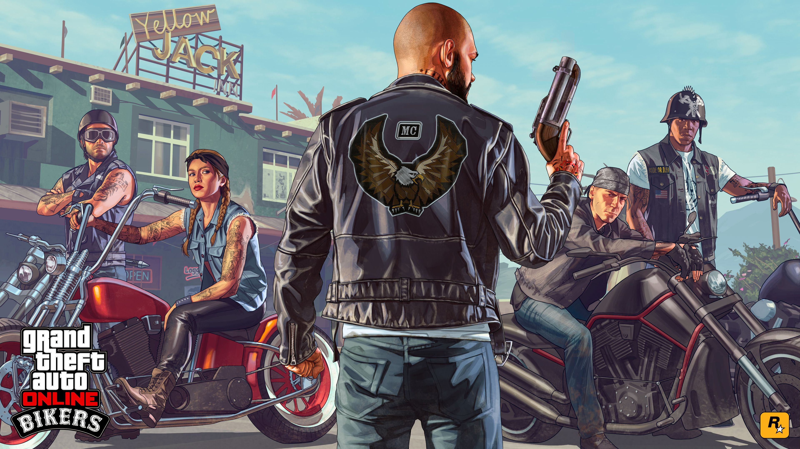

grand theft auto v
For me, Grand Theft Auto V’s extraordinary scope is summed up in two favourite moments. One is from a mid-game mission in which I flew a plane into another plane, fought the crew, hijacked the thing, and then parachuted out and watched it crash into the sea to escape death at the hands of incoming military fighter jets. Another time,whilst driving around in an off-road buggy, I got distracted by something that looked like a path up one of the San Andreas mountains. Turns out it was a path, and I spent 15 minutes following to the summit, where I nearly ran over a group of hikers. “Typical!” one of them yelled at me, as if he nearly gets run over by a rogue ATV on top of a mountain every time he goes on a hike
I could go on like this for ages. GTA V has an abundance of such moments, big and small, that make San Andreas – the city of Los Santos and its surrounding areas – feel like a living world where anything can happen. It both gives you tremendous freedom to explore an astonishingly well-realised world and tells a story that’s gripping, thrilling, and darkly comic. It is a leap forward in narrative sophistication for the series, and there’s no mechanical element of the gameplay that hasn’t been improved over Grand Theft Auto IV. It’s immediately noticeable that the cover system is more reliable and the auto-aim less touchy. The cars handle less like their tires are made of butter and stick better to the road, though their exaggerated handling still leaves plenty of room for spectacular wipeouts. And at long last, Rockstar has finally slain one of its most persistent demons, mission checkpointing, ensuring that you never have to do a long, tedious drive six times when you repeatedly fail a mission ever again.
Grand Theft Auto V is also an intelligent, wickedly comic, and bitingly relevant commentary on contemporary, post-economic crisis America. Everything about it drips satire: it rips into the Millennial generation, celebrities, the far right, the far left, the middle class, the media... Nothing is safe from Rockstar’s sharp tongue, including modern video games. One prominent supporting character spends most of his time in his room shouting sexual threats at people on a headset whilst playing a first-person shooter called Righteous Slaughter (“Rated PG – pretty much the same as the last game.”) It’s not exactly subtle – he literally has the word “Entitled” tattooed on his neck, and the in-game radio and TV’s outright piss-takes don’t leave much to the imagination – but it is often extremely funny, and sometimes provocative with it. Grand Theft Auto’s San Andreas is a fantasy, but the things it satirises – greed, corruption, hypocrisy, the abuse of power – are all very real. If GTA IV was a targeted assassination of the American dream, GTA V takes aim at the modern American reality. The attention to detail that goes into making its world feel alive and believable is also what makes its satire so biting. Grand Theft Auto V’s plot happily operates at the boundaries of plausibility, sending you out to ride dirt bikes along the top of trains, hijack military aircraft, and engage in absurd shootouts with scores of policemen, but its three main characters are what keep it relatable even at its most extreme. The well-written and acted interplay between them provides the biggest laughs and most affecting moments, and the way that their relationships with one another developed and my opinion of them changed throughout the story gave the narrative its power. They feel like people – albeit extraordinarily f***ed-up people. Michael is a retired con man in his 40s, filling out around the middle as he drinks beside the pool in his Vinewood mansion with a layabout son, air-headed daughter, serially unfaithful wife, and very expensive therapist – all of whom hate him. Franklin is a young man from downtown Los Santos who laments the gang-banger stereotype even as he’s reluctantly seduced by the prospect of a bigger score. And then there’s Trevor, a volatile career criminal who lives in the desert selling drugs and murdering rednecks; a psychopath whose bloodthirsty lunacy is fuelled by a combination of methamphetamine and a seriously messed-up childhood.
The missions flit between their individual stories and an overarching plotline that involves all three, and it’s a credit to GTA V’s versatility and universal quality that each character has his share of standout missions. As their arcs developed I felt very differently about each of them at different times – they’re not entirely the archetypes that they seem to be. This three-character structure makes for excellent pacing and great variety in the storyline, but it also allows Rockstar to compartmentalise different aspects of Grand Theft Auto’s personality. In doing so, it sidesteps some of the troubling disconnect that arose when Niko Bellic abruptly alternated between anti-violent philosophising and sociopathic killing sprees in GTA IV. Here, many of Michael’s missions revolve around his family and his past, Franklin is usually on call for vehicular mayhem, and extreme murderous rampages are left to Trevor. Each has a special ability suited to his skills – Franklin can to slow time while driving, for example – which gives them a unique touch. Narratively, it’s effective – even off-mission I found myself playing in character, acting like a mid-life-crisis guy with anger issues as Michael, a thrill-seeker as Franklin, and a maniac as Trevor. The first thing I did when Franklin finally made some good money was buy him an awesome car, because I felt like that’s what he’d want. Trevor feels a like a bit of a get-out-of-jail-free card for Rockstar, providing an outlet for all the preposterous antics and murderous behaviour that otherwise might not fit in with GTA V’s narrative ambitions. I found his violent insanity a little overblown and tiresome at first. As get-out clauses go, though, it’s pretty effective, and Trevor’s over-the-top missions are some of GTA V’s action-packed highlights. It’s a successful way of solving a problem that’s prevalent in open-world games: the tension between the story that the writers are trying to tell, and the story you create yourself within its systems and its world. Grand Theft Auto V accommodates both, masterfully, allowing neither to undermine the other.
